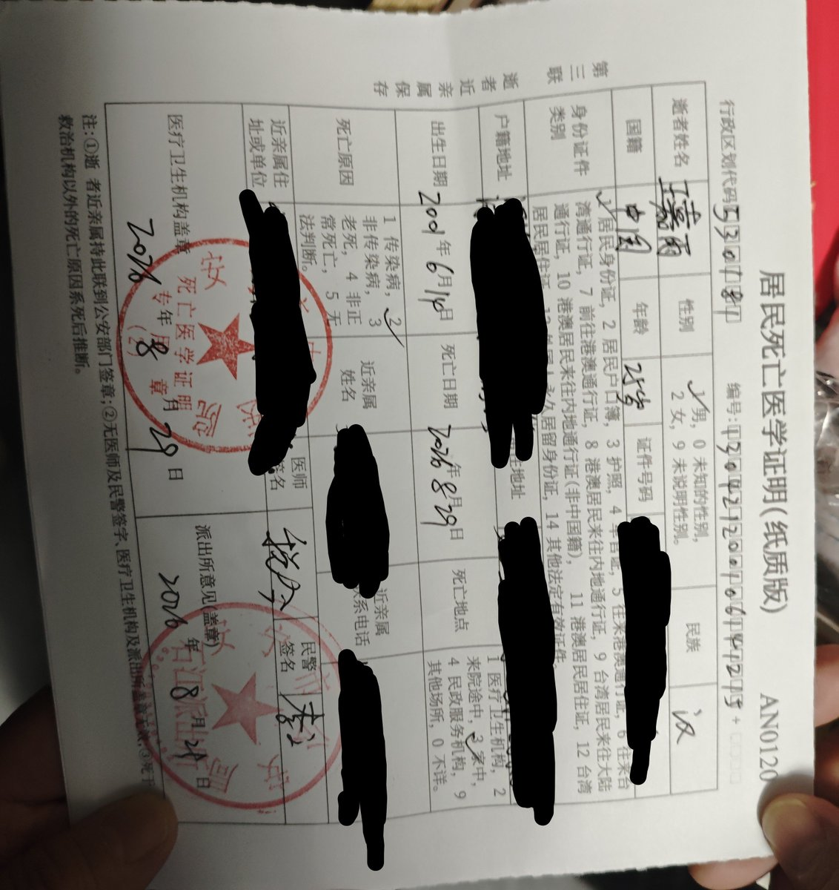

Winit
@winterfruit_1
@drugs_artists @pr80net 吃一堑吃一堑吃一堑吃一堑吃一堑

沐雨八世
@drugs_artists
讣告：
永夜安港@pr80net现运营人
扎克另一个运营者
璐璐璐森堡 真名王嘉雨 化名姚志云
死因是服用60t右美+两瓶西柚汁与 84mg专注达和普瑞巴林
早上八点睡觉中逐渐呼吸抑制窒息猝死
1点他妈喊他发货时人就已经没了
我本想看护 但他对我说Leave me alone 我很自责
已经火化了骨灰寄存在殡仪馆
沉重悼念 https://t.co/rQHd4BwmR8